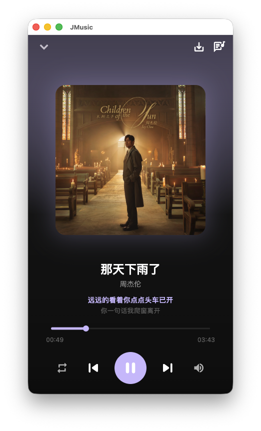
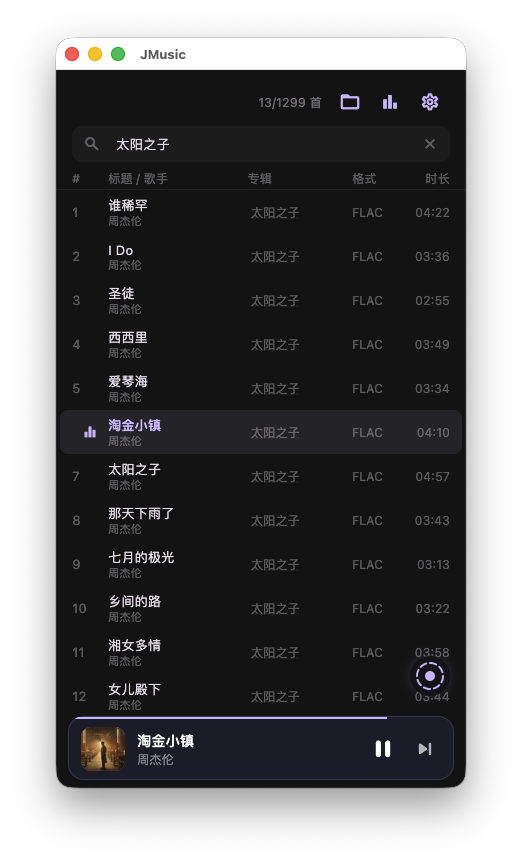
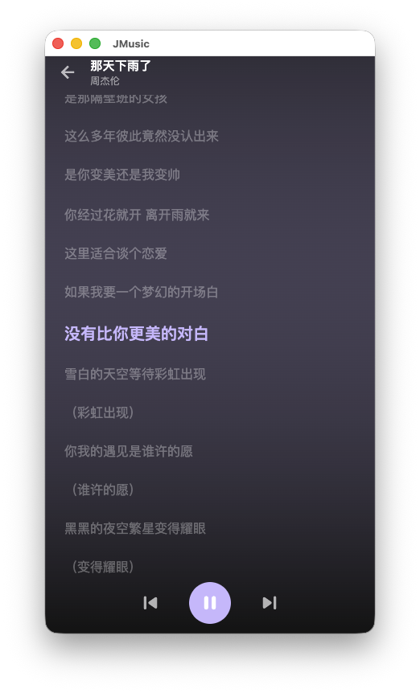

本地音乐播放
支持 MP3 / FLAC / WAV / OGG 等主流音频格式，基于 Rust + rodio 高效解码。
JMusic 是一款使用 Flutter + Rust 构建的跨平台本地音乐播放器， 支持在线歌词与专辑封面，提供桌面悬浮歌词、macOS 菜单栏歌词与沉浸式全屏歌词体验。

Features
从扫描你的本地音乐目录开始，到歌词同步、桌面悬浮、菜单栏歌词，所有体验都被仔细打磨。
支持 MP3 / FLAC / WAV / OGG 等主流音频格式，基于 Rust + rodio 高效解码。
选择音乐文件夹自动扫描，建立可搜索的本地歌曲库，元数据持久化到本地 JSON。
逐行高亮、平滑居中滚动，长歌词自动换行左对齐，专为认真听一首歌而设计。
透明置顶窗口实时显示当前 + 下一行歌词，可拖拽定位、调字号、鼠标穿透锁定。
系统状态栏实时显示歌词，支持播放控制、上一/下一首，关闭主窗口仅隐藏后台保活。
顺序播放、单曲循环、随机播放，一键切换，状态持久化下次启动自动恢复。
Screenshots
深色 Material 3 主题，专注内容，去除一切干扰。


Architecture
UI 层享受 Flutter 的跨平台与流畅，核心层享受 Rust 的性能与安全。
UI 层
Material 3 深色主题，Riverpod 管理全局状态，跨平台一份代码。
桥接层
Dart ↔ Rust FFI，安全的零样板代码绑定，类型自动同步。
核心层
音频解码、文件扫描、网络请求、本地持久化全部交给 Rust。
Download
从 GitHub Releases 选择对应平台的安装包，免费且开源。
macOS · 解除“应用已损坏”提示
Apple Silicon未签名公证版本首次打开会被 macOS 拦截。打开终端执行：
xattr -cr /你的解压路径/JMusic.app
小提示：先输入 xattr -cr （结尾留一个空格），
再把 .app 拖入终端窗口，回车即可。
FAQ
当前发布版本仅支持 Apple Silicon (M1/M2/M3 等 M 系列芯片)。Intel 芯片用户可通过源代码自行构建：
flutter build macos。
这是 macOS Gatekeeper 对未签名应用的默认拦截。在终端中执行
xattr -cr /路径/JMusic.app
清理隔离属性后即可正常启动。
在线匹配依赖第三方接口，可能因接口变动而失效。此时可使用应用内的手动编辑功能，导入 LRC 歌词或封面文件，元数据会写入到源文件保留。
不会。JMusic 离线优先，所有歌曲库元数据保存在本地 JSON。仅在你触发匹配/搜索时， 才会向音乐元数据接口发起请求，无任何遥测或账户系统。
支持 MP3、FLAC、WAV、OGG 等主流格式，由 Rust 端 rodio 引擎进行解码与播放。
当然欢迎！项目以 MIT 协议开源。可以在 GitHub Issues 提交 Bug、想法或 Pull Request。